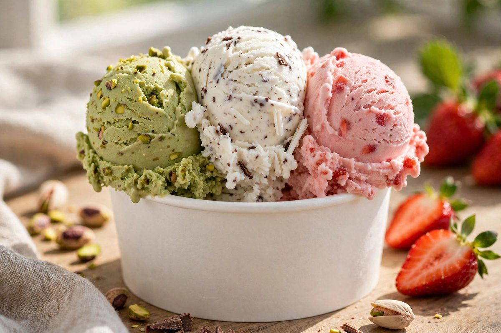

Home › Guides
Gelato: How to Make Real Italian Ice Cream at Home

Gelato is not just Italian ice cream. It is churned more slowly, served warmer, and made with more milk than cream, so it tastes denser, softer, and more intense than ordinary ice cream. A spoonful of good gelato coats the tongue and melts slowly, releasing flavour that ice cream, eaten colder and harder, cannot match. You can make it at home with a simple custard base.
Gelato versus ice cream
Ice cream is churned fast, which whips in a lot of air, and it is served very cold and hard. Gelato is churned slowly, so it contains less air, and it is served at about minus 12 degrees, warmer than ice cream. That is why gelato feels dense and silky rather than fluffy.
Gelato also uses more milk and less cream, and often less sugar. The result is a cleaner flavour, where the main ingredient, whether pistachio, chocolate, or strawberry, tastes stronger. Fat coats the tongue and dulls flavour, so less fat means more taste.
The base
A classic gelato base is milk, cream, sugar, and egg yolks, cooked gently into a custard. Heat the milk and cream with half the sugar. Whisk the yolks with the rest of the sugar, then pour the hot milk over the yolks, stirring constantly. Return the mixture to the pan and cook gently, stirring, until it coats the back of a spoon.
Do not boil the custard, or the eggs will curdle. Strain it into a bowl, cool it quickly in an ice bath, and chill it in the fridge for at least four hours, or overnight. A cold base churns better and gives a smoother result.
Churning and freezing
Churn the cold base in an ice cream maker until it is thick and soft, about 20 to 30 minutes. It should look like soft-serve ice cream. Transfer it to a container, press cling film onto the surface to stop ice crystals, and freeze for two to four hours until firm but scoopable.
Without a machine, freeze the base in a shallow tray and whisk it every half hour for three hours to break up ice crystals. The result will not be as smooth, but it will still be good. Let gelato sit at room temperature for five to ten minutes before serving, so it softens to the right texture.
Flavours to try first
Start with stracciatella, which is a plain sweet cream base with fine chocolate shavings stirred in at the end. Pistachio is the classic test of a gelateria: use unsweetened pistachio paste, not green flavouring. Chocolate gelato should be dark and intense, made with good cocoa.
Fruit gelato, called sorbetto when it has no dairy, is made from fruit puree, sugar, and water. Strawberry, lemon, and mango are all excellent. For fruit gelato, use ripe fruit and taste the puree before churning, because freezing dulls sweetness.
Serving gelato like an Italian
Gelato is served in small portions, because it is rich and intense. A small cup or a small cone is enough, and it is better to have two small scoops of different flavours than one large scoop. Let the gelato sit for five minutes before serving, so it softens to the right texture and the flavour opens up.
In Italy, gelato is often served as an afternoon snack or after dinner, not as a grand dessert. An affogato, a scoop of vanilla gelato with a shot of hot espresso poured over it, is a favourite way to finish a meal. It takes one minute and it is one of the best desserts there is.
Frequently Asked Questions
What is the difference between gelato and ice cream?
Gelato is churned slowly with less air, uses more milk than cream, and is served warmer, so it is denser, softer and more intensely flavoured.
Can I make gelato without an ice cream maker?
Yes. Freeze the base in a shallow tray and whisk it every 30 minutes for about 3 hours to break up ice crystals.
How long does homemade gelato keep?
About one to two weeks in the freezer, covered. After that it can become icy, so eat it while it is fresh.